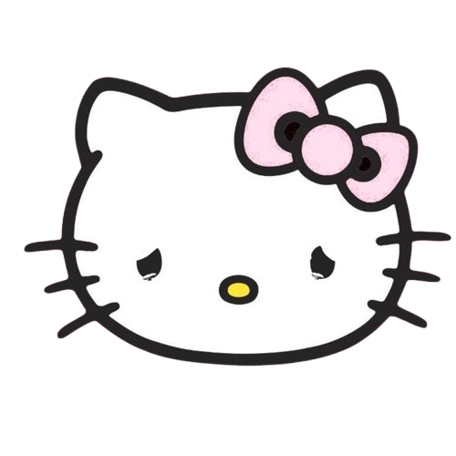
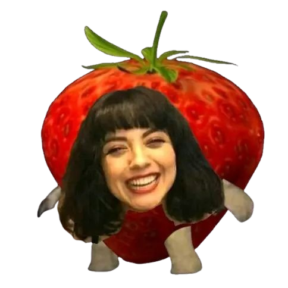
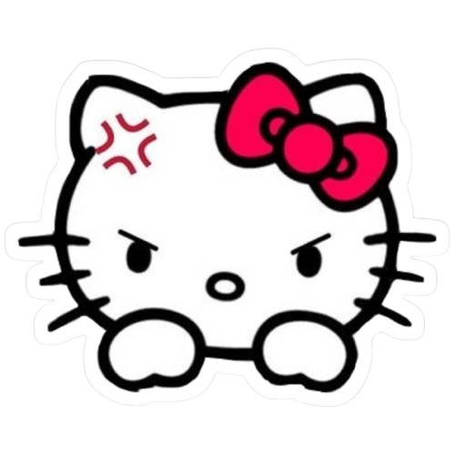
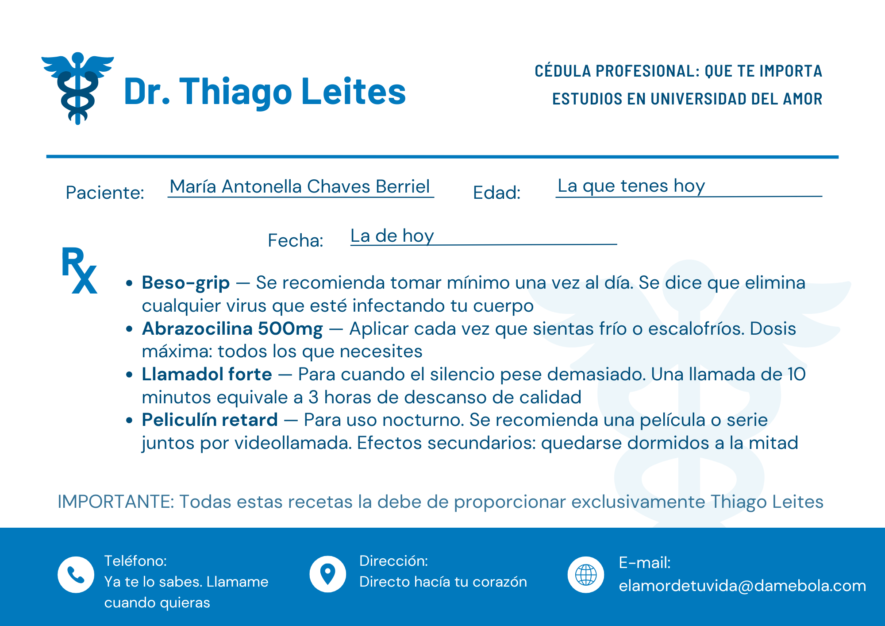
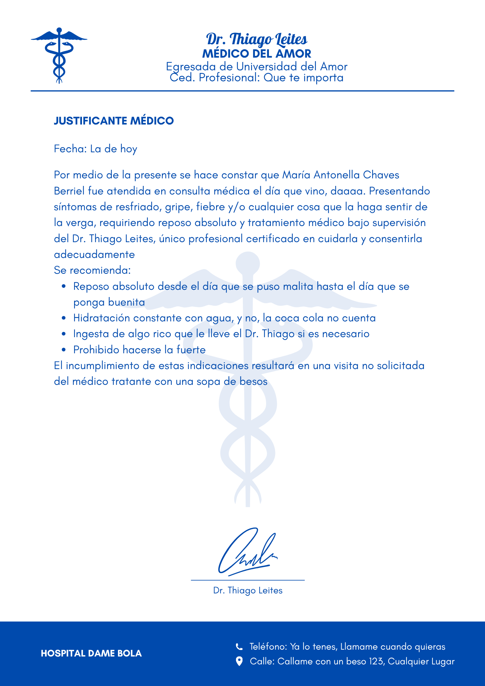
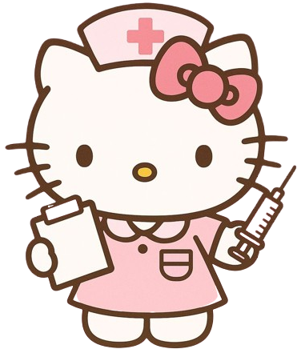
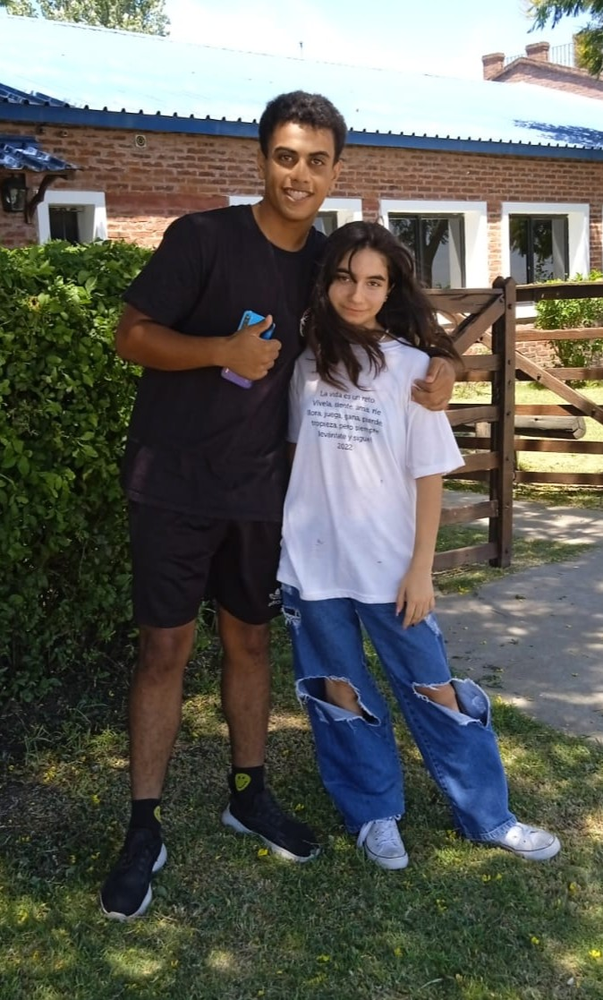
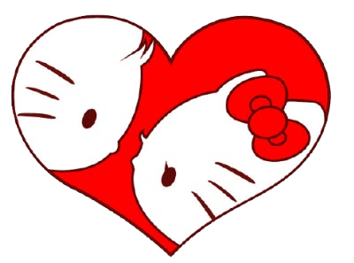
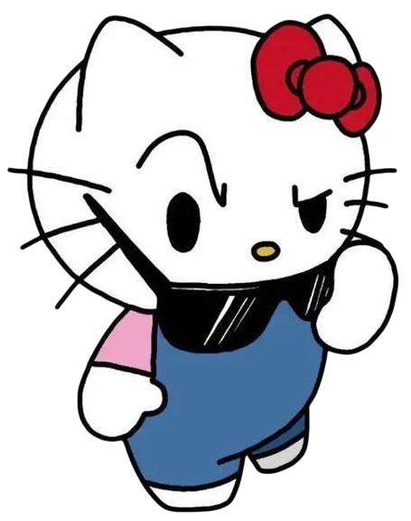

Supongo que si estás leyendo esto es porque hoy fue uno de esos días difíciles. Sea lo que sea que haya pasado, no estás sola. Tenés personas que te quieren y confían en vos, tus amigas, tu mamá, gente que está ahí aunque a veces no lo parezca
La vida puede ser muy mala, lo sé. Pero también puede ser muy buena, y la misma vos que hoy está leyendo esto es la prueba de eso. Te acordás cuando me decías que no querías ir de mañana a la UTU porque no conocías a nadie y tenías miedo? Y sin embargo fuiste, y acá estás, con amigas con las que tenés una confianza increíble. En lo malo siempre hay algo lindo escondido, por mínimo que sea
Hoy capaz no tenés ganas de nada, y está totalmente bien. Tampoco te voy a decir que te levantes y sonrías falsamente. Tomate el tiempo que necesites, pero volvé, porque el mundo está mejor con vos funcionando. "No haga caso en lo que digan, no quieren que florezcas", y vos vas a florecer igual
Sos valiente, más de lo que creés. Sos fuerte aunque seas muy sensible, y es lo que te hace ser vos. "No vas a caer", Anto. Y tu sonrisa es de las que contagian y matan de lo perfecta que es
No sé cuánto puede hacer una carta, pero si en algún momento necesitás hablar con alguien, buscame, o buscá a quien sea de confianza. Hablarlo siempre ayuda, aunque sea un poco
Ánimos, Anto!!!!!! Te quiero 3 millones!!!
Para cuando tengas un mal día
Hola,
Che, qué te pasó? Por qué la cabeza gacha? Tené cuidado que se te cae la corona, reina
Si abriste esta carta es porque hoy fue uno de esos días en donde la vida se levanto con el pie izquierdo y te estan o te pasaron un millon de cosas, sea lo que sea, es totalmente válido sentirse mal por ello. No todos los días van a ser color de rosas, y no tienen por qué serlo
A veces es normal que se acumulen muchas cosas, lo que dijeron, lo que no dijeron, lo que dijiste, lo que callaste, lo que salió mal y lo que no salió. Llega la noche y sentis que tu vida es un "tormento" y dejame decirte que no pasa nada por ello
Lo que no podés hacer es quedarte tirada para siempre. Porque estoy seguro que vos no sos de esas que se rinden tan facil, o me equivoco? Prueba de ello es que seguis aca. Así que respirá, tomá o come algo rico, escucha musica a todo lo que da, y dejá que el día termine. Y como dijo Canserbero en una de sus canciones... "Mañana será otro día"
Dale pitufina, cualquier cosa avisame y le pegamos a quien sea que te caiga mal. Cuidate!!
Para cuando estés aburrida
Holaaaaa,
estás aburrida? Bueno, tengo varías soluciones, la más divertida es estar conmigo en llamada y jugar lo que pinte, porque... quien no querría escuchar mis hermosos chistes mientras lo humillo en un jueguito? En tal caso de que no puedas jugar conmigo o no quieras jugar conmigo, te propongo unos minijuegos, por asi decirlo
Primero, un acertijo. Leelo bien:
"Te doy calor cuando tenés frío, te calmo cuando estás nerviosa, te hago reír cuando estás triste y me tenés cerca aunque estés lejos. No soy una persona, pero a veces lo parezco. ¿Qué soy?"
Si queres saber la respuesta me lo vas a tener que pedir a mi, jejejeje
Si seguís aburrida, te propongo ver algo juntos en Netflix, hay una app para eso, o salir a algún lado aunque no tengamos plata, la compañía mata el aburrimiento, no? O si querés algo más tranqui, te reto a adivinar la palabra del día acá - wordle.global/es - si la adivinás sin hacer trampa, te compro lo que quieras a maximo de 200 pesos
Y si estás muy aburrida, hacé este quiz para saber qué tanto me conocés, te juro que va a estar muy gracioso y te vas a equivocar en todas - ¿Cuánto conocés a Thiago?
Y si todavía seguís sin saber qué hacer... llamame. Esa siempre es la mejor opción, mjm
Feliz cumpleaños!
Feliz cumpleañooooooooooooooooooooooooooooooooos,
Te conocí con 13 y ahora tenés 16 años, quién lo pudiera imaginar eh? "Crecen tan rápido" diría mi mamá, jajajaja
Nada, sé que los cumpleañeros no dan regalos a sus invitados, pero yo te quiero pedir una sola cosa, que disfrutes este día, que lo pongas a tu merced, que te diviertas y hagas las locuras que más quieras. Porque este es tu día, y tenés más que merecido disfrutarlo con aquellos que te aman y aprecian. Es para olvidarte de todo y estar presente, nada más
Es lindo verte crecer, aunque no sea de altura, jajaja. Ya no sos la Antonella que conocí por primera vez, cambiaste. No te voy a decir si para bien o para mal, porque no soy quien para decidirlo. Pero lo que sí sé es que cada versión tuya que fui conociendo me fue sorprendiendo más y más. Y me alegra, sinceramente me alegra haber sido parte de tu vida en estos dos años
Haber coincidido fue lo mejor que me pasó, en serio te lo digo. A veces pienso en lo fácil que hubiera sido que nuestros caminos no se cruzaran, y se me hace raro imaginarlo, investigando, encontré que coincidir con alguien que luego se vuelve muy importante para ti, es 1 en varios miles de millones, así que imaginate. A pesar de todo, la pasé y la paso bien con vos. Tu ternura, cuando te enojás, cuando sonreís, cuando haces berrinches, tu timidez, tu sentido del humor, son cosas que me sacan una sonrisa sin avisarme y me hacen dar cuenta de cuánto te aprecio
Hoy celebrás un año más de vida después de todo lo que cargaste, todo lo que luchaste y todo lo que superaste. Eso vale más que cualquier regalo sobre la mesa en mi humilde opinion. Que este día sea completamente tuyo y demostrale a la vida quien es la perra quien
Disfrutá, agradecé los regalos que con tanto amor te dieron, y ojalá me hayas pedido a mí como regalo, jajajaja
Dejo aca una playlist de spotify que me hace acordar a vos - Playlist
Feliz cumpleaños enana. Felices 16. Te quiero mucho, pero mucho más allá del infinito
Para cuando me extrañes
Si abriste esto es porque... me extrañás? Antonella extrañándome!? Eso no se ve todos los días, jajajja. Y eso por qué? Me desaparecí de tu vida? Sea cual sea la razón por la cual me extrañás, estoy seguro que estaría más que feliz que me dijeras que me extrañás, porque estoy seguro que yo también te extraño, por no decir que todos los días te extraño
Yo al menos siempre me acuerdo de vos, ya sea por una canción, una pavada que veo por ahí, algo gracioso que me pasa, y de la nada, cuando me doy cuenta ya te estoy extrañando sin haberlo planeado, simplemente pasa como si nada, como si alguien me hubiese hecho una macumba, y si fue así, quiero saber quién fue para darle las gracias
Sabés lo que es extrañar a alguien que todavía existe? Es raro, porque no es una despedida, no es un adiós, es simplemente que no estás y se nota. Se nota en los silencios, en los momentos que tengo algo gracioso para contar y no hay nadie del otro lado, en esas canciones que tienen nombre y apellido. Vos sos de esas personas que ocupan espacio aunque no estén, y eso no es algo que pase con cualquiera eh, aprecialo
Así que si hoy me extrañás, bienvenida al club, acá estamos todos los días. Si me extrañás, escribime, hallá la forma de escribirme, qué te detiene? No hace falta una razón grande ni el momento perfecto, con un "hola" alcanza, yo hago el resto. Y si te da vergüenza escribir primero, bueno... abriste esta carta, no? Algo me dice que el primer paso ya lo diste, te la dejo ahí, jajajaja

Para cuando quieras reírte
Te querés reír entonces? Bien, mira estos 5 chistes malos pero graciosos:
1. Por qué los pájaros vuelan hacia el sur en invierno? Porque caminando tardarían demasiad.
2. Qué le dice un techo a otro techo? Nada, los techos no hablan
3. Por qué el libro de matemáticas estaba triste? Porque tenía demasiados problema
4. Qué hace una abeja en el gimnasio? ¡Zum-ba!
5. Cómo se despiden los químicos? Ácido un placer
... Perdón, me quedé embobado pensando en tu sonrisa. De seguro ahora mismo le estás sonriendo a la pantalla, envidio a tu celular, mataría por verla. La tuya son de esas sonrisas que matan, sabías? Que hipnotizan y te dejan embobado sin avisarte.
Ojalá nunca la pierdas, que nadie te saque ese brillo que tanto te caracteriza. Ya te dije que sos lo más? Nunca me canso de decirlo. A ver, tenés tus defectos así como yo y todo el mundo, pero eso también te hace ser vos, y me encanta. Me encanta que seas vos, me explico?
Espero haberte podido sacar una sonrisa al menos, o una carcajada muy fuerte, jajajaj. Mandame una foto tuya sonriendo si tanto te gustaron mis chistes malos. Cualquier cosa, si tenes alguna queja de mis chistes, vení y decimelo a la cara, yo te hago reir en persona si queres

Para cuando el futuro te asuste
Es difícil la vida, no? Más ahora, cuando uno crece y de repente el mundo te empieza a pedir cosas que antes no te pedía. Decisiones, responsabilidades, el famoso "y vos qué vas a hacer con tu vida?" "De qué vas a trabajar?" como si a los 16 años ya tuvieras que tener todo resuelto
Qué te asusta tanto del futuro? No conseguir lo que tanto querés, lo que tanto soñás? Escuchame bien, el miedo al futuro es totalmente normal, lo siente todo el mundo, no importa la edad. Lo que no podés hacer es dejar que ese miedo te paralice, porque si te preocupás de más, no te va a llevar a ningún lado y solo te va a generar más ansiedad
Solo te voy a decir una cosa, las decisiones que tomás no son buenas ni malas en sí mismas. Lo que importa son las consecuencias, y ojo con esa palabra porque no siempre significa algo malo. Una consecuencia puede ser algo bueno, algo neutro, algo que no esperabas pero que te abre una puerta nueva. Así que elegí lo que más creas que es correcto en el momento que te toca elegir, con la información que tenés, y confiá en eso
Y equivocate, equivocate todas las veces que sea necesario, pero aprendé. Aprendé de cada caída, de cada decisión que salió diferente a lo que esperabas, porque ahí es exactamente donde uno crece de verdad. Los errores no te definen, lo que hacés después de ellos sí
Nadie, absolutamente nadie, sabe lo que va a pasar en el futuro. Ni los que dicen tenerlo todo claro, porque el futuro tiene su factor sopresa. La diferencia está en que mientras vos estés tranquila con lo que elegís, todo va a ir bien. Y si no sabés qué camino tomar, andá por el que más te llame la atención, por el que más te mueva por dentro, por el que te llene de esa pasión que cuando la sentís no necesitás que nadie te convenza de nada.
Y si después de un tiempo ves que ese camino no era lo que esperabas, nunca es tarde para volver a empezar. Nunca. Sos muy joven, Antonella, tenés todo el tiempo del mundo para experimentar, para probar, para cambiar de opinión mil veces si hace falta. Que nadie te diga lo que tengas que hacer. Hacé lo que quieras, pero con conciencia, que eso es lo único que te pido.
El futuro da miedo porque no lo conocemos, pero, si lo queres ver de otra forma, también es lo más emocionante que existe, es como apostar! jajajjaaj. Nada está escrito, y vos sos la única que tiene el lápiz en la mano
Animos Antoooooo!!
Para cuando estás enojada
Uy, me parece que alguien está enojada... espero que yo no haya sido la causa, jeje. Qué te pasó? A quién le tenemos que pegar?
Si estás muy enojada, al punto de que se te está por estallar una vena, hacé esto, primero respirá hondo 4 segundos, sostené 7 segundos y exhalá 8 segundos. Repetilo hasta que sientas que bajás un cambio. Es una técnica real, no me la inventé, se llama 4-7-8 y la usan hasta los militares para calmarse, así que si a ellos les funciona, a vos también te va a funcionar, eh
Ya respiraste? Bien, ahora sí
La vida es injusta, no? Siempre la vida, siempre la vida. Porque al fin y al cabo casi nunca le echamos la culpa a las personas, siempre la vida tiene la culpa. Pobrecita la vida, cargando con todo
Bueno, ya que estás un poco más tranquila, te voy a contar un cuento. Sí, un cuento y no me preguntes por qué, simplemente seguime la corriente
Había una vez una chica que tuvo un día horrible. Todo le salió mal, la gente la sacó de quicio y para colmo le tocó leer un cuento improvisado escrito por un tipo que claramente no sabe escribir cuentos. Pero en algún momento de ese día horrible, sin darse cuenta, se le escapó una sonrisa. Y esa sonrisa leve y casi imperceptible, fue suficiente para recordarle que los días malos terminan, siempre terminan. Fin
Espero que ese cuento sin ningún sentido te haya distraído aunque sea dos segundos, jajaja
Ahora en serio, el enojo es válido. Sentite mal, gritá en una almohada si hace falta, llorá si querés, todo eso está bien. Lo que no podés hacer es quedarte atascada en eso. Las personas y las situaciones que te sacan de quicio no merecen que les regales más energía de la que ya les diste, en serio, no vale la pena, por más dificil que sea. Vos valés demasiado para eso
Y si necesitás hablar, ya sabés dónde encontrarme
Respirá, Anto, va a pasar

Para cuando dudas de ti misma
Veo que alguien duda de sí misma eh. Qué te llevó a eso? Miedo? Ansiedad? A qué le tenés tanto miedo? Venga ya tía, no digais gillipolleses, dea, jajajajaj, si sos la chica más capaz que conozco
A lo largo de lo que te conozco, noto que te comparás mucho, y ojo, eso desde mi punto de vista, no sé cómo lo ves vos. Pero no te sirve de nada compararte con los demás, literalmente todos somos diferentes, tenemos diferentes oportunidades, entornos, opiniones, "talentos", etc. Compararte con alguien más es como comparar una naranja con una manzana, las dos son frutas, las dos son ricas, pero son completamente distintas. Ninguna es mejor que la otra, son simplemente diferentes
Y creo que en el fondo a veces sentís que no servís para nada, que no tenés talento ni nada por el estilo, pero yo creo que sí lo tenés, solo que no lo explotás lo suficiente o pasa desapercibido. Es difícil notar en qué somos buenos, yo por ejemplo no sé en qué soy bueno con certeza, si bien dibujo, hago poemas, cuentos y demás, son solo hobbies, algo en lo que me tuve que esforzar y no nació como talento. Y está bien, porque el talento sin esfuerzo no llega a ningún lado, y el esfuerzo sin talento muchas veces llega más lejos de lo que imaginás
Mira, en algunas cosas que creo que sos buena es en matemáticas, yo se que me vas a decir que nada que ver, pero estoy seguro que en el fondo, bien en el fondo, te apasiona algo de eso, sino decime, por qué antes querías ser profe de matemáticas? Las personas no quieren enseñar lo que odian, no?. Y en dibujar también, tenés potencial, hasta podés hacer tu propio estilo, y ya sé que me vas a decir que nadita que ver, pero tus dibujos no son tan malos che. En serio.
Pero más allá de los talentos y las habilidades que son cosas que se pierden con el tiempo, hay algo en lo que sos muy buena y que quizás nadie te lo dijo, sos muy buena en ser una buena persona y genuina y eso, en un mundo donde cada vez es más raro encontrar gente genuina, vale muchísimo literalmente. Tu forma de querer, de preocuparte por los que te importan, de ser vos sin filtros, eso no es poca cosa eh
Así que la próxima vez que te mires al espejo y empiecen esas vocecitas en la cabeza diciéndote que no podés, que no servís, que los demás son mejores, acordate de esto, esas vocecitas mienten y si no me creés a mí, creele a todo lo que ya lograste hasta acá, porque llegaste hasta acá siendo vos
Vos podés, Anto. Siempre pudiste
Para cuando estés enferma
Estás enferma? No te preocupes, llegó el Dr. Thiago para ayudarte. Qué es lo que tenes? Resfriado? Gripe? Fiebre? Fácil de solucionarlo, deje que le recete varias cosas y un justificativo para que conste que usted estuvo enferma y pueda usarlo en la UTU
...
Listo, acá tenes:


Jajajaj, espero que te mejores pronto, es feo estar enfermo literalmente. Los mocos cayendo como si fueran una cascada, tu cabeza que parece el mismísimo infierno, tu garganta más áspera que una lija mojada con sal, el cuerpo entero doliendo como si hubieras cargado el mundo entero, y encima sin ganas de comer nada rico. Un combo horrible, la verdad
Pero vos tranquila, ya te vas a mejorar. El cuerpo es más inteligente de lo que parece y sabe cómo recuperarse solo, solo necesita que lo ayudes un poco. Tomá mucha agua, nada de coca cola, agua de verdad. Tomá alguna pastilla o lo que te haya recetado el médico, y quedate acostada sin preocupaciones, que estar en cama cuando estás enferma no es perder el tiempo
No te pongas a estudiar, porque se que te encanta estudiar todos los días, mjm
Cualquier cosa me decís, yo sería ese loco que iría a tu casa simplemente a cuidarte y a llevarte algo rico para que comas. Sin pensarlo dos veces
Cuidate mucho, Anto, en serio

Secreta
Vaya, si abriste esta carta es porque en serio te sabías la fecha, te di demasiadas pistas o porque al final te la acabé diciendo, jajajaja. Sea cual haya sido la razón, esta carta es un poco diferente a las demás. Acá solo voy a ser honesto, que tampoco es algo que me cueste tanto cuando se trata de vos
Te amo, y ya lo sabés de sobra, pero no sé si captás todo lo que significa esa palabra cuando te la digo. No es un "te amo" vacío, ni de esos que se dicen por mera costumbre. Es un te amo que me sale solo, sin planearlo. Aún me acuerdo de vos la primera vez que te vi. Ahí sentada con Vic, el 2 de febrero, y sí, me acuerdo de la fecha porque así de enamorado me tenés, aparte, es una de esas fechas que no se olvidan, jajaja. En ese momento pensé "es bellísima". Tu mirada y esa sonrisa me mataron en el acto, y hasta el día de hoy, no me recuperé del todo
"¿Cómo se puede sentir tantas cosas en tan poco tiempo y no morir?" No lo sé, pero con vos lo descubrí. Sos mi "Amor completo"
Te amo por ser quien sos. Esa pitufina de ojos bellos que le gusta morder a la gente, llena de ternura, super sensible, super divertida, que me saca una sonrisa con cualquier pavada. Cómo te explico todo lo que me encanta de vos? Estaría un siglo nombrándolas una por una. "Cada vez que yo te veo y que te pienso, siento que florezco", y no me preguntes por qué te amo porque no sabría decirte a ciencia exacta, hay algo en vos que me llama la atención, capaz será tu forma de andar, de ser, esa forma en que me mirás, en que sonreís. No lo sé, pero lo siento, y lo siento hace ratazo
Aún me acuerdo cuando quisiste saber por qué había dejado a Paulina, que si era re talentosa y no sé cuánto más habías dicho. Y? Sí, Paulina baila bien y es una crack, y ojalá le vaya bien en la vida, pero todo eso se queda corto cuando hablamos de vos. Para mí sos una mujer increíble que vale la pena, lo digo totalmente en serio y es más, te lo he mencionado en varias ocasiones que vales la pena
Te acordás de ese día que quise ir a la misma playa que vos y al final me fui a la otra punta? Qué paja aquel día. Sinceramente quería encontrarnos y disfrutar del día, eh, y de paso iba a conocer a tu madre y todo. Y hablando de eso, perdón si en su momento estuve muy insistente con lo de decirle a tu madre. No medía tanto lo que te asustaba eso, cómo ella podría reaccionar. Lo siento sinceramente. También te pido disculpas por las veces que te lastimé
Mira, entre nos, yo sé que vos no me amás, o al menos me das a entender eso algunas veces, no sé lo que sentís por mí, y si no me amás o no pensás en mí como tu futura pareja, está totalmente bien. No quiero forzar nada. Pero si en algún momento sentís interés y estoy soltero y me lo demostrás, con mucho gusto te haré la mujer más feliz del mundo. "Ven, cuídame, aunque parezca que me estás haciendo daño", "amárrame", porque lo que quiero es que seas vos, al menos una vez más
Yo, Thiago Facundo Leites Feirer, prometo cuidar el corazón de Antonella Chaves en las buenas y en las malas, y prometo no ensuciar ni desordenar nada si me deja la llave que abre su corazón. Porque Anto, te amo demasiado, y es difícil para mí negarlo, aparte, "no es fácil que no estés aquí". Sino, por qué crees que hice todo lo que hice por vos? Esta página, la otra página, todos los poemas, ese juegito de roblox que te hice, todas las cartas, los regalos, los ositos, la ropa, todo pero absolutamente todo lo hice porque te aprecio, y "aún te amo y creo que hasta más que ayer"
Me gustaría que algún día hablemos, pero que hablemos de un tema en particular, qué sentís con respecto a todo esto. No sé si esto te molesta, si te incomoda, si lo tomás bien o mal. Yo me mantengo al margen, no te tiro tantos piropos, no te digo preciosa, no te lleno de regalos constantemente, porque pienso que a veces te puede incomodar. Por ejemplo, cuando me dijiste que no te gustan tanto las sorpresas porque te las podés tomar a mal, me quedé pensando. Pero la verdad es que eso me encanta, porque me propone un reto, para hacerte una sorpresa tengo que conocerte muy bien, saber lo que te pone mal y lo que no y eso me fascina. Pero bueno, si alguna vez te pinta hablar de eso, yo estaría más que feliz, porque eso sinceramente me ayudaría a tomar una decisión de que hacer con respecto a lo que siento por vos, si seguir o esperar y parar
Espero que te haya gustado todo, Anto. Que hayas disfrutado todo lo que hice a lo largo de estos dos años, de mi compañia, yo te digo que disfrute la tuya y espero que esta relación, y no la llamo amigos porque tan amigos no somos desde mi punto de vista, siga para toda la vida. Esta página, junto a la caja de golosinas, el oso pardo y la plata de tu cumpleaños, son los últimos regalos que te voy a dar, al menos por ahora. Porque si bien disfruto hacer todo esto, en el fondo me duele un poco no ser correspondido. Me parece que la suerte me ganó más que yo a ella, así que espero que disfrutes estos últimos detalles
Pero bueno... será cierto eso de que vas a estar soltera hasta los 20? Y si yo rompo eso? Tendré alguna chance? Ya vas a ver, preciosa. Algún día te voy a enamorar. Algún día, porque si yo no tuviera chances de reconquistarte, vos ya te hubieras ido, no? Ni estuviéramos hablando ni yo te estuviera haciendo esto. Así que estoy seguro que en el fondo de tu corazón, todo esto, mi sola presencia, te mueve alguna parte del corazón, por más leve que sea el movimiento. No escuchaste de ese dicho que dice "de una pequeña chispa se enciende una gran llama"?
Anto, sos muy especial para mí, muchas gracias por estar, sinceramente
PD: Te amo mucho, mucho, mucho, por si no te quedó claro, jajajaj


ADVERTENCIA!!

Ah, no, no, esto está bloqueado hasta tu cumpleaños. No hagas trampa. Frotalece tu paciencia, jajajaj
ADVERTENCIA!!
Para abrir está carta necesitas saber el primer día que hablamos. Así que ponte pilas si queres saber que hay dentro de ella, jajajaj